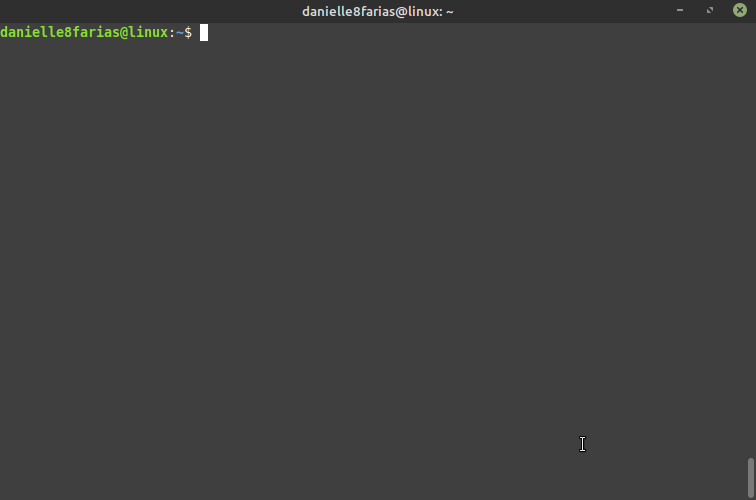
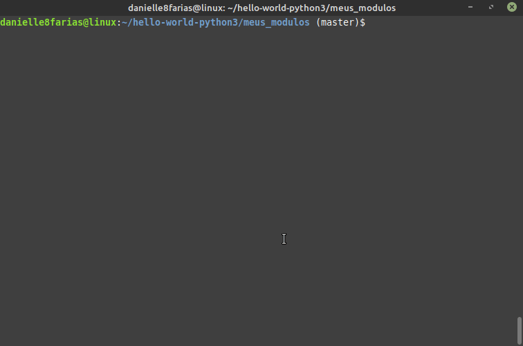
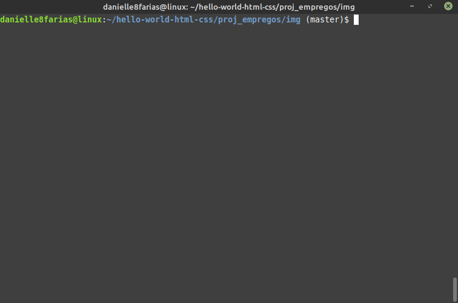
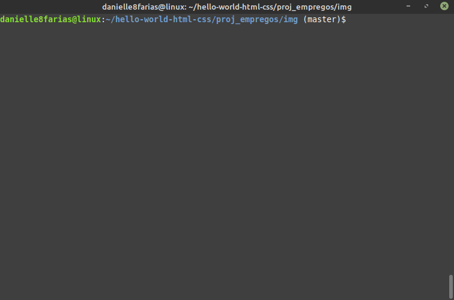
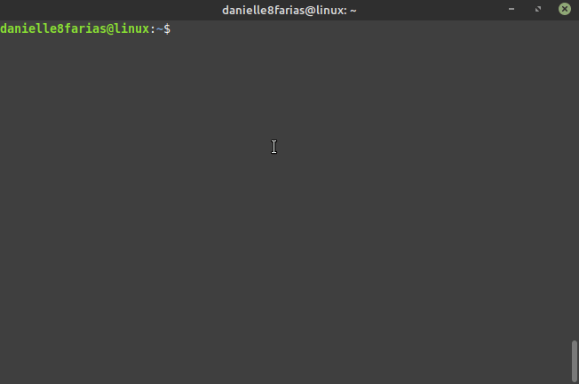

Ver diretório atual
Para saber em que diretório você se encontra, digite no terminal:
$ pwd
- $ indica que você deve usar o usuário comum para fazer essa operação.
- pwd do inglês, print name of current/working directory, imprime na tela o nome do diretório atual.
Exemplo:

A exibição de:
usuario@computador:~$
no terminal indica que você está no diretório /home/seu_nome_de_usuário. Perceba que depois dos dois pontos temos o sinal diacrítico til.
Mudando de diretório
Para seguir até a pasta de downloads, por exemplo, basta digitar:
$ cd Downloads/
E no terminal será exibido:
usuario@computador:~/Downloads
- cd do inglês, change directory, serve para mudar de diretório/pasta.
Usando a tecla TAB para completar o nome do diretório
Aqui vale a dica de iniciar a escrita do diretório desejado e utilizar a tecla TAB para a função de autocompletar.
$ cd Do [pressione a tecla 'tab' para completar]
Se houver mais de um diretório com as mesmas iniciais, será preciso apertar a tecla TAB duas vezes para que o terminal retorne o nome das pastas e você possa escolher qual precisa.
$ cd Do [pressionando o 'tab' duas vezes]
Documentos/ /Downloads

Navegando para um determinado diretório de qualquer lugar
Também é possível entrar no diretório citando o caminho completo. Exemplo:
Entrando no diretório games.
$ cd /usr/games

Atalho para a home do usuário
Caso deseje entrar em algum diretório que esteja na home do usuário, pode se usar o sinal diacrítico til ~. Exemplo:
Entrando no diretório imagens
$ cd ~/Imagens
Retornar ao diretório acima
Para retornar um diretório acima do atual, digite:
$ cd ..

Navegando para o diretório home do usuário de qualquer lugar
Para retornar diretamente a pasta /home/seu_nome_de_usuário, não importa onde você esteja, digite:
$ cd

Retornar dois diretórios acima
Para retornar duas pastas acima da atual, digite:
$ cd ../..

Retornar ao diretório anterior
Para retornar ao diretório anterior, no qual você estava
$ cd -
- -, sinal de menos. Esse operador é equivalente ao comando
$ cd $OLDPWD && pwd
que retorna o usuário ao diretório anterior e mostra o seu endereço na tela.
Exemplo:
Diretório raiz
A exibição de:
usuario@computador:/$
no terminal indica que você está no diretório raiz. Perceba que depois dos dois pontos não temos o sinal diacrítico til, mas temos a barra.
Para seguir diretamente para o diretório raiz basta digitar:
$ cd /

Navegando por diretório com nomes compostos
Para diretórios com nomes compostos, usa-se a contrabarra (barra invertida) ao final de cada palavra. Exemplo:
$ cd Área\ de\ Trabalho
Ou ainda, usa-se aspas (duplas ou simples). Assim,
$ cd 'Área de Trabalho'